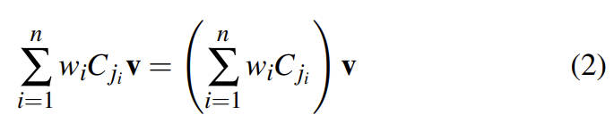

GeometricSkinningWithApproximateDualQuaternionBlending
Table of Contents
GeometricSkinningWithApproximateDualQuaternionBlending note.
<!– more –>
2008 GeometricSkinningWithApproximateDualQuaternionBlending
Introduction
通过 matrices 或（quaternion, translation）pairs 来表示 rigid transformations，只是 SE(3) 的两种参数化方式。刚体变换并没有限制我们 blending，例如，（axis，angle，translation）3-tuples 或（axis，translation·sin(angle)）pairs 都支持 blending。即使我们限制自己通过线性组合进行混合，我们也可以通过考虑刚性变换的不同参数化来构建无限多种不同的混合方法。
- SE(3) 是旋转加上位移，也称欧式变换（Euclidean transformation）或 刚体变换（Rigid Transformation）
理论上最佳的 rigid transformation blending 方法在 2004 年，由 Govindu 提出，该方法可以保证正确 skinning，但是对于实时应用来说太慢了。因此，我们提出基于 dual quaternions 的 closed-form 的近似方法。
这些概念可以通过 2D Euclidean space 来说明。如下图，p1 p2 p3 在圆弧上，左图中直接对三个点的坐标进行平均，得到的点将不再圆弧上，这就是 linear blend skinning 的 artifacts。在 2D Euclidean space 中，右图中我们通过平均 p1 p2 p3 对应的角度来解决该问题：
Related Work
使用 linear blend skinning 来对 mesh 进行变形时，顶点的位置变换可以表示为如下公式 1：
Tips: 论文中矩阵左乘向量，向量是列向量。
通过下面这个例子可以看出，linear blend skinning 所导致的糖果包装问题（关节 j1 保持不变，关节 j2 绕 x 轴旋转 180 度，j1 和 j2 对 v 的权重都为 0.5）：
利用矩阵向量乘法的分配律可以将公式 1 转化为如下公式 2，公式 2 的右边可以理解为首先对关节变换矩阵 Cj 进行混合，然后再应用到顶点 v 上。

即使每个关节变换矩阵都是 rigid transformation，混合关节变换矩阵得到的矩阵也不一定还是 rigid transformation。所以，linear blend skinning 会有 artifacts。改进 skinning 质量的方法就是用更巧妙的矩阵混合计算来代替 linear blending 矩阵。若新的混合技术可以保证得到的结果是 rigid transformation，那么我们就可以避免 candy-wrapper 这类问题。
理想情况下，我们希望能得到高质量的 skin 变形，并且计算复杂度和 linear blending 接近。新的方法不必完全正确，但是需要能正确处理变换中的旋转和平移部分。处理平移并不简单，因为其依赖于坐标系的选择（如：旋转中心点）。
Tips: 这里的旋转中心点并不是刚体变换的旋转部分对应的旋转中心点，而是整个刚体变换对应的旋转中心点。
我们以人类胳膊为例来进行说明：
我们以如下一块布来进行进一步说明：
v1 靠近关节 j1，v2 靠近关节 j2，若按照就近原则选取旋转中心。当 j1 旋转时，v1 的旋转以 j1 为坐标系，v2 的旋转则以 j2 为坐标系。这导致原本靠的很近的 v1 和 v2 变得距离加大。
直观上来说，需要为每个顶点独立计算一个恰当的旋转中心。2002 年 Alexa 使用了 Matrix exponentials 和 logarithms，其主要理念是使用 matrix logarithms 线性组合来代替 matrix 线性组合，而线性组合 matrix logarithms 涉及到线性组合旋转中心。但是，该方法得到的旋转不是最短路径。
Rigid Transformation Blending
通过前面的讨论，我们对理想的 rigid transformation blending 方法更加明确了，其应该可以恰当的混合旋转中心，并且可以利用 quaternions 的优势恰当混合旋转部分。一个简单的想法是简单地线性混合旋转中心，并将它们与使用四元数计算的旋转耦合。不幸的是，如下面 2DCase 中讨论所示，这样做是不正确的。因此，在本节中，我们将讨论如何正确混合旋转中心。
给定一个 2D 的 rigid transformation，平移变换为 t，旋转变换的旋转角度为 α，则该 rigid transformation 对应的 center of rotation r 如下：
2D Case
我们先通过一个 2D 的例子来说明混合 centers of rotation 的问题。下图中给出了两个 Rigid Transformation M1 和 M2，
很明显，通过组合 M1 和绕着原点旋转α2−α1 可以得到 M2。所以，M1 和 M2 之间最自然的插值是沿着圆弧的。一个重要的问题是，插值变换 M(t)对应的 center of rotation 在哪儿？ 从上图中可以看出，其在 r1 和 r2 之间。但是，由 r 的公式（公式 4）可以得出插值变换 M(t)对应的 center of rotation 不是线性的。下图高亮显示了线性组合 center of rotaion 所得结果。所以，非线性插值 rotation centers 是非常必要的。
下面，我们来推导想要的非线性插值法。在 2D 中，简单地线性插值旋转角度是很自然的。不幸的是，相应的 3D 对应物将涉及适当的球面平均，而我们不希望做球面平均，为了快速蒙皮，我们更喜欢线性混合四元数。 因此，为了使我们的讨论具有相关性，我们将考虑使用线性混合四元数的 2D 版本来插值旋转角度。这相当于沿直线在 (cosα1,sinα1) 和 (cosα2,sinα2) 之间进行插值，然后再投影回球面弧，如下图 3 所示。此外，为了与四元数完全兼容，我们将使用一半三角函数中的旋转角度
下面我们使用线性混合来推导插值变换对应的 center of rotation：
上面推导出来的结果和平面对偶四元数是等价的。
3D Case
对偶四元数线性混合的一个巨大优点是，其支持多个 rigid transformations.